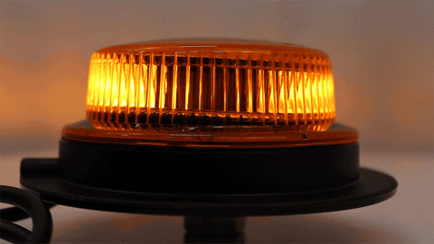
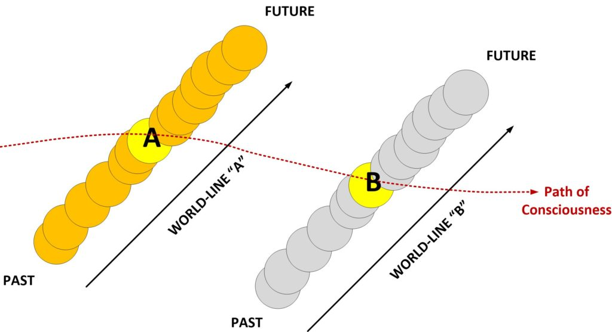
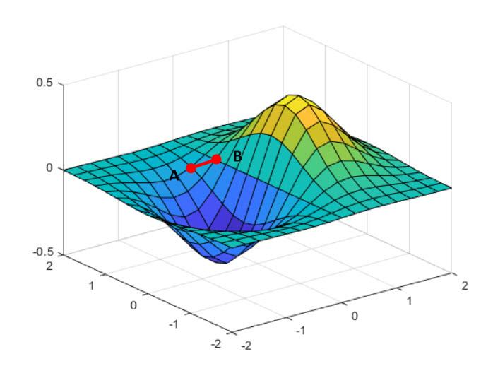
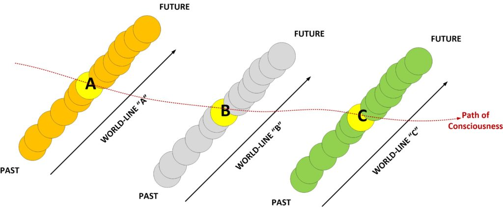
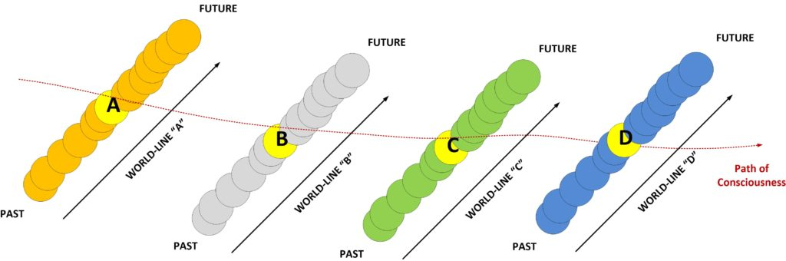
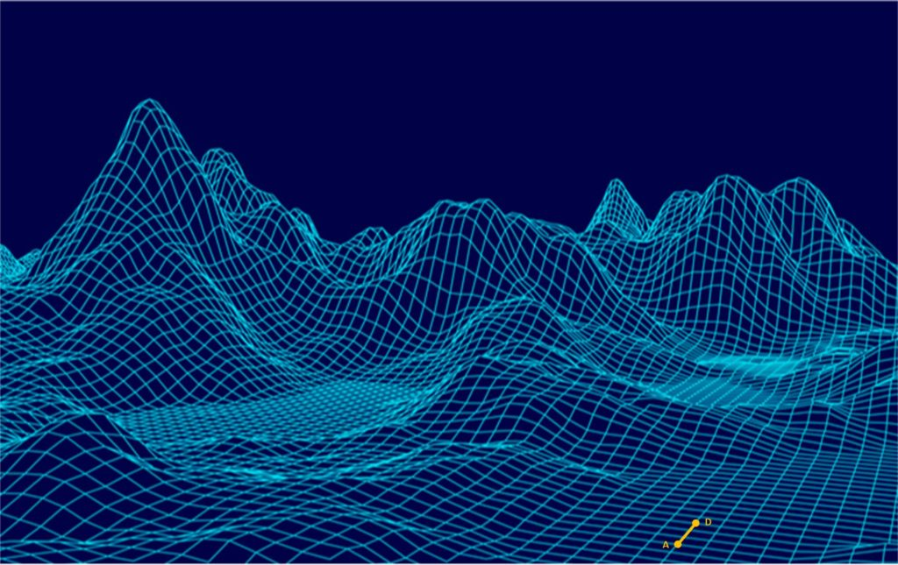

Here we will “walk through” a one second span of time and observe what happens as consciousness navigates the MWI.
Long time readers of MM will recognize many of what is being stated herein. But what is uniquely special about this post is the conceptualization of what happens when the “second hand” on your watch goes from one mark to the next. It is something that you can witness, and can conceptualize.
Many people have trouble trying to understand the ideas and mechanisms involved here simply because they are far too radical and goes against everything that they have learned at school.
The first moment
You start at world-line “A”
This world-line has it’s own history; it’s own past and it’s own future. And you are just residing inside the world-line for just a moment.

You can see that from the point of view of your consciousness, you see the world-line as a moment. In this case the moment is shown in yellow. And the world-line is shown in orange. It has it’s own past, and it has it’s own future, and your consciousness resides in it for a fraction of a second before moving on.
Your consciousness has anchored (momentarily) at the pineal gland in the brain.
Pineal gland The pineal gland, conarium, or epiphysis cerebri, is a small endocrine gland in the brain of most vertebrates. The pineal gland produces melatonin, a serotonin-derived hormone which modulates sleep patterns in both circadian and seasonal cycles. The shape of the gland resembles a pine cone, which gives it its name. The pineal gland is located in the epithalamus, near the center of the brain, between the two hemispheres, tucked in a groove where the two halves of the thalamus join. The pineal gland is one of the neuroendocrine secretory circumventricular organs in which capillaries are mostly permeable to solutes in the blood. -Wikipedia
As long as consciousness is anchored it resides in “particle form” …
We have seen that the essential idea of quantum theory is that matter, fundamentally, exists in a state that is, roughly speaking, a combination of wave and particle-like properties. To enter into the foundational problems of quantum theory, we will need to look more closely at the "roughly speaking." It is needed since it is not so easy to see how matter can have both wave and particle properties at once. One of the essential properties of waves is that they can be added: take two waves, add them together and we have a new wave. That is a commonplace for waves. But it makes no sense for particles, classically conceived. Just how do we "add up" two particles? Quantum theory demands that we get some of the properties of classical particles back into the waves. Doing that is what is going to visit problems upon us. It will lead us to the problem of indeterminism and then to very serious worries about how ordinary matter in the large is to be accommodated into quantum theory. For the picture of matter in the small presented by quantum theory is quite unlike our ordinary experience of matter in the large. -The Quantum Theory of Waves and Particles
So think of your consciousness as an undulating, or pulsing, rotating beacon. One moment it is in “particle form”, and then the next moment, it is in “wave form”. And it goes through these forms continuously.
Wave, particle, wave, particle, wave, particle and so on.

And if you look at it, you will see that it follows a sinusoidal path.

So, now it turns quickly. It goes from particle form to wave form. And when it is in wave form, it is no longer anchored to the pineal gland, and thus it can exit the body…
…and exit the world-line too.
To the next wold-line

And so we see that in a fraction of a second’ 1/4 of a second to be exact, the consciousness moves from world-line A to world-line B.
Both world-lines are very similar to each other.
They might differ in the slightest of items. Aside from being a fraction of a second older, the world-line might have a minor change or two that differs from the world-line A.
We call a group of similar world-lines as "clustering", or that the world-lines "cluster together". They are all very similar to each other with only the smallest of variations.
Now, it was the thoughts generated by the consciousness when it is outside of the world-lines that navigates to the most likely nearby world-lines. No thoughts are ever generated when the consciousness is in particle form.
The selection of the "most likely" next world-line is the entropy profile of the thoughts generated by consciousness. Or, in other words, the world-line that is the "best fit" for the thoughts, or accumulated thought profile, of the consciousness.
When the consciousness is on a world-line all it can do is operate a body physically. And when the consciousness is outside of the body (and outside of the world-lines) is when it can think and generate thoughts.
- Inside the body = particle form = move the body
- Outside the body = wave form = think thoughts
And thoughts are how the consciousness navigates the MWI and selects the most likely world-line.
A bigger picture
If you look at the “bigger pictures” you can place the highest likelihood of nearby world-lines on a flat surface, and measure their relative comfort or discomfort by the size of the “hills and valleys” that undulate on the surface.
Such as here…

So, knowing this, let’s consider another fraction of a second. Now, the consciousness moves towards and occupies a world-line “C”…
Movement to a third world-line

And we can see that the process repeats. Every time the consciousness switches from particle form to wave form, it exits the world-line (and the body it inhabits) and goes to the closest world-line that matches the thoughts generated by consciousness.
Now, you might want to consider how YOU as consciousness has observed the events of the last three world-lines.
For starters, YOUR “past” is unique to the path that your consciousness took. In the picture above, you have a “life line” that is brown and shown in a dashed line.
You also have another “past”.
Each time you visit a world-line, you are exposed to completely different past. Many of which are similar, but some can be really different.
Movement to a fourth world-line
If you are an average, and typical human, exactly one second has passed from the moment you were in world-line “A” to now at world-line “D”.

For every second, most humans pass through four different world-lines. And for most of them they are all so very similar to each other.
And if you map them all out on a three dimensional grip where the topographic surface represents the most likely world-lines that you can visit (from your momentary point of reference) it would look something like this…

And at that, please realize that you control your momentary thoughts by verbal prayer affirmations. And since each affirmation takes more than one second to read (usually from four to twelve seconds), the mere action of reading your prayer / affirmation campaign is actual navigation and piloting of your consciousness through the MWI.
Consider this affirmation;
"I live a happy, healthy and comfortable life."
It took me 4.66 seconds to read. Which equates to 18.64 world-lines. During the time that I read it out loud, that was all that I was thinking of. You can be assured that my consciousness navigation would be the most likely world-lines to manifest those thoughts.
Conclusion
This is the “secret of the universe”. This is how our reality works, and the actual operation of the MWI, and all the aspects of quantum physics as it applies to day to day life.
As you can see, it differs considerably from what mainstream understanding is, as well as scientific belief. But it is the way it works.
Now, you can say that I am either [1] a crazy madman for coming up with this belief, or that [2] I am an absolute genus for coming up with this. Or, conversely, you can believe what I am telling you. That [3] I am part of MAJestic, and my role in the organization was (and is) to be a liaison to extraterrestrial benefactors that will help the human species grow and advance.
And whether you believe it or not, is not my concern.
This is how our reality works, and in a few centuries this understanding will be embraced and accepted as normal and “the way it is”.
And at that, you can thank me for giving you the “secrets of the universe”. And if you can understand it, then you are in the top 0.000001% of the human race right now.
Conversely, if you refuse to accept this, then you can believe in shape-changing reptilians that want to control the human race, huge American-led space fleets with “space marines”, and a Heaven and Hell that you can control through donations to the largest church in the neighborhood. It’s YOUR reality.